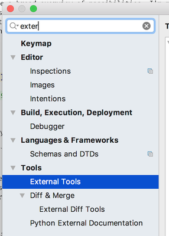
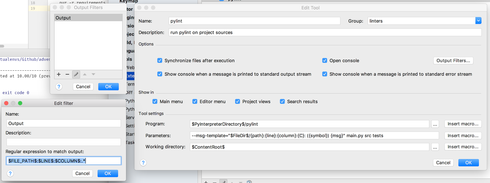
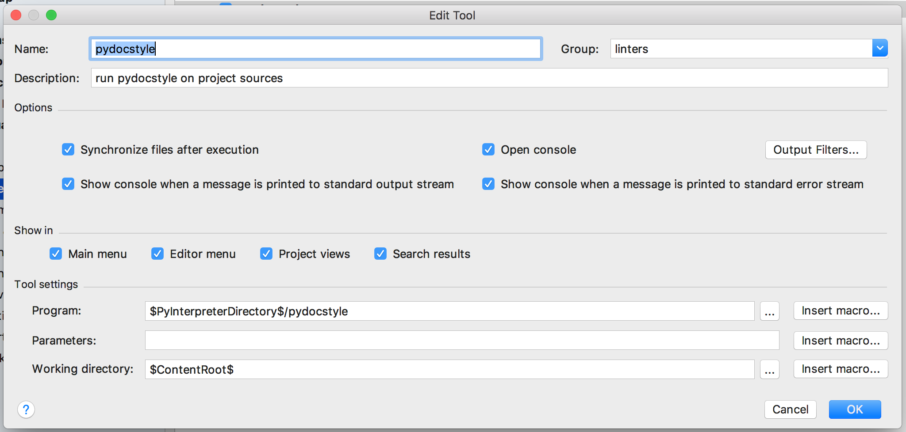
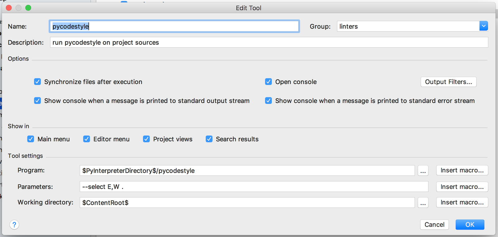
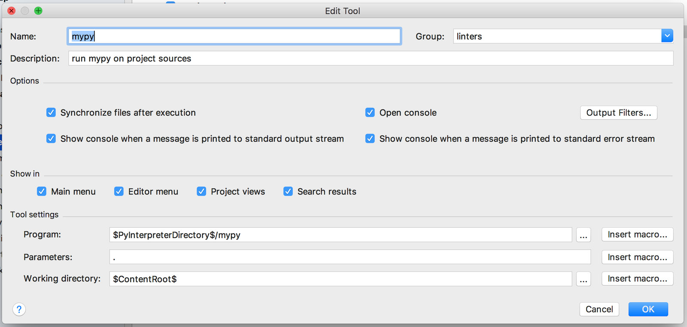
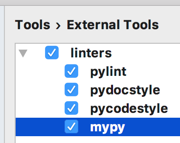
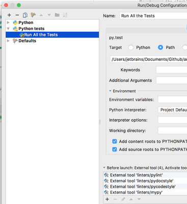
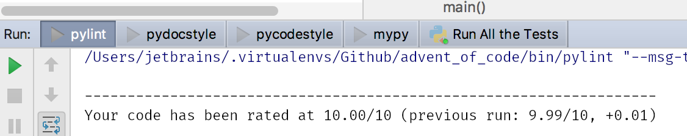

Linters and PyCharm
Today's topic is linters. Not sure about you but I'm a huge fun of linters in Python. As a PyCharm user I already have great inspections and stuff you may expect from a good IDE but as a code style maniac it's absolutely not enough for me. So my "standard" pack of linters include: pylint, pydocstyle, pycodestyle and mypy. Not sure if one can call mypy a linter but let's live with it for now. I'll briefly describe each one of them, touch PyCharm integration via external tools and provide a live example from one of my repositories on github. Let's go.
Basics
Just a few notes about linters in general and how one can benefit from using them in Python. First of all the main purpose of linters - to check your source code and find possible style, logic and all other kinds of errors (feel free to narrow down the definition to only style errors). As you probably know Python is a dynamic language which leads to a broad field of possible errors which will not be found by the compiler. Obviously linters may eliminate such errors before you or your users will find them. Another great linters advantage is to enforce style of your code (remember PEP8). Good uniform style will result in less errors, maintaining easiness, new contributes convenience, you named it.
pylint
pylint is a well known Python linter and one of my favorite tools which I use extensively in almost every project I have. It's very strict and highly customizable. To run pylint against your code just type:
python -m pylint <some_dir>
By default it generates a voluminous output with code assessment, different metrics (tables) and so on. The most important here is warnings (top of the report), e.g.:
************* Module src.year2016.day3b E: 27, 0: Sequence index is not an int, slice, or instance with __index__ (invalid-sequence-index) C: 44, 8: Invalid variable name "a" (invalid-name)
These two tell us that I used a wrong type inside a slice and an invalid name of the variable (in terms of PEP8). As I said pylint is super strict and some errors may be just false positives, in the case above I really known what I'm doing with the variable name a and wrong type in slice is just a Python 3.6 style type annotation that is not supported by pylint at all at least right now.
To mute such false positives and customize the report one may use pylintrc file, this is in fact a very simple and useful. Just create a pylintrc file in the project root and add some options, my example:
[MESSAGES CONTROL] disable=locally-disabled, # False positive for type annotations with typing module invalid-sequence-index, # False positive for OK test methods names and few other places invalid-name, # False positive for test file classes and methods missing-docstring [REPORTS] # Simplify pylint reports reports=no [SIMILARITIES] min-similarity-lines=10 ignore-docstrings=yes
This will reduce the size of output (I don't really care about my code assessment rate), enforce some style options like 80 characters per line and disable few inspections globally, e.g. missing docstring - I rely on pydocstyle to check my docstrings. You can also disable a warning per file with comments on top of it, e.g. mute invalid name inspection for specific file:
# pylint: disable=invalid-name ...
or mute all inspections for a specific function:
def main(): # pragma: no cover ...
pydocstyle
pydocstyle is a simple tool with goal to check your docstrings for correct style. You're going to be surprised what errors you'll see - I never thought there're such conventions in Python.
Execution is straightforward:
python -m pydocstyle
And the result:
./src/year2016/day4b.py:36 in public function ``solve``: D202: No blank lines allowed after function docstring (found 1) ./src/year2016/day4b.py:36 in public function ``solve``: D400: First line should end with a period (not 'd')
Here I have two errors: first one points to a blank line after the docstring which is not allowed by the convention and the second one tells that first line of the docstring should end with the dot like a normal sentence does.
There's no much to elaborate on here, just try it, al least pydocstyle is going to enforce you to place docstring in all of your functions and classes which is kinda nice thing to do (and it will skip tests by default).
pycodestyle
You may think that pycodestyle is needless after you have pylint but it turns out not to be the true story. pydocstyle is intended to find PEP8 errors and as simple as it is often finds some dumb style errors I have that pylint failed to notice. I suspect pylint sometimes thinks such stupid typos are not the thing it is going to spend time reporting.
Very complicated usage:
python -m pycodestyle --select E,W .
Notice the --select flag - it's intended to enable all errors and warning which pycodestyle can report. Kind of "ultra strict" mode. Try to run it against your sources and be surprised how many PEP8 errors you have. And if you're not the IDE user there're going to be tones of errors - brace yourself.
mypy
mypy is a different story. As we all know Python is a dynamic language but you still can type-annotate your code and have it type-checked before runtime with external tools, e.g. PyCharm or mypy. This is a huge topic and you should read some docs to make yourself familiar with type annotations in Python, good start is PEP 484.
Type annotations is a double-edged sword - you're going to find some errors in your code in advance but you're also going to introduce a lot of redundant code to your project which is completely useless in the runtime. There're some ways to separate type annotations from the code itself - with stubs, but it's a different story, let's check a simple example:
def foo(a: int) -> bool: return str(a % 2 == 0)
Our function checks if a is even and returns True or False. I added types to function declaration with this new shiny Python 3 style, so basically a should be int and function should return boolean. If you're using PyCharm it will throw a warning right into your type annotated face complaining about wrong output type which is str in fact and no way boolean.
If you're using some other editor there will be no warning and we obviously want to have one. So to check this code against type errors we're going to use mypy. Just save the function in sample.py and run:
python -m mypy sample.py
and the result is:
sample.py: note: In function "foo": sample.py:2: error: Incompatible return value type (got "str", expected "bool")
Not so fast my my sweet dynamic child.
Ok, so I hope you have a broad overview of possibilities now. I'm not in any way an expert in this topic and it's huge so you should read mypy and typing docs at least if you're interesting. I run mypy over source code in the continues integration just to check everything outside of PyCharm. You may hate this type-stuff idea in Python all together so feel free to dump it right now but it worth trying I believe.
PyCharm Integration
We'll use External Tools feature to integrate all four linters with PyCharm to some extent. Open Settings | Tools | External Tools in PyCharm and click a + button to add first external tool in out project.
{kind=link}
Let's start with the most hard to setup - pylint, complete configuration should be similar to image below:
{kind=link}
Line by line:
- First of all specify the tool name (any you like), I pick pylint for obvious reasons
- Next select or create a group for this tool to belong to, for us it'll be linters
- Provide a custom description
- Enable all option in Options paragraph - we really want to see pylint output
- Now a tricky part - configure Output Filters - it'll allow PyCharm to highlight pylint output by inserting links to files with errors so you will be able to quickly jump to an error or warning in your code. Name and Description is not really important but Regular expression to match output is, so the format for us is $FILE_PATH$:$LINE$:$COLUMN$:.*, $name$ is a special variables used by PyCharm to understand where is file path, line and column in the line (read more in official documentation: External Tools)
- Program is path to pylint executable, we're using $PyInterpreterDirectory$ template to refer to directory where Python interpreter of the current project is placed
- Parameter field here solves two problems: first it specifies what files and folder should pylint check (main.py src tests, edit according to your code), second it sets output format for pylint errors, it's required so PyCharm can understand it and provide useful links from errors to source code
- Working directory is easy - just $ContentRoot$ template, which is our project root
You can now access this external tool from Tools | External Tools. Feel free to run it against your code (make sure there're some PEP8 errors) and check the output. Meanwhile we're moving to pydocstyle.
pydocstyle is on the way:
{kind=link}
- Name, group, description and set of basics options as always
- Executable is pydocstyle
- And $ContentRoot$ as working directory
Now let's setup pycodestyle:
{kind=link}
- Same simple settings for name, group and description
- Enable all options
- Program executable is pycodestyle in $PyInterpreterDirectory$
- For parameters we're using --select flag to enable all errors and warnings, the dot is target for pycodestyle
- Same working directory as pylint has
And the last one - mypy:
{kind=link}
- Everything is the same
- Except executable is mypy
- And parameter is dot - target for mypy
In the result you should have something like this:
{kind=link}
And you can access everything from Tools menu and run independently:

The final touch is to add all this external tools to some run configuration, e.g. one to run all the tests:
{kind=link}
Now try to execute this run configuration and see additional tabs with linters result:
{kind=link}
Live Example
For a live example I choose my simple project with solutions for Advent of Code puzzles. It's super easy and does not use any specific configuration for linters apart of pylintrc and a little customisation for calls in Makefile.
I usually implement some kind of automation for my projects. I used several different utilities for it (invoke, paver, etc) and now my favorite is simple Makefile. The logic is very simple - Makefile contains commands which you can run with make <command>. This command will execute a bunch of predefined instructions right in your terminal, for example:
lint: python -m pylint main.py src tests python -m pydocstyle python -m pycodestyle --select E,W . python -m mypy .
lint command will execute all linters one by one. Each line is straightforward. If there will be errors make will stop and output the captured log. Be aware that you MUST use tabs instead of spaces in makefiles for indentation or everything is going to blow up.
For manual usage I rely on PyCharm integration but it's very useful to have such automation for continues integration, for example my .travis.yml related part:
install: - make update script: - make test - make lint
Very concise and reusable.
Resume
That was the basic linters usage in Python overview with a few simple real world examples. I hope you found it useful. Linters as probably any other tools are not a silver bullet which will solve all of your problems, in fact I skip using them entirely for some projects so feel free to decide for yourself is it worth trying and using or not.
Please leave any recommendations, suggestions and general notes in the comments below - I would love to incorporate any tips in the post and my routine workflow. I'm also working on my English writing skills - so any feedback is appreciated. Thank you for reading!
Comments
Comments powered by Disqus